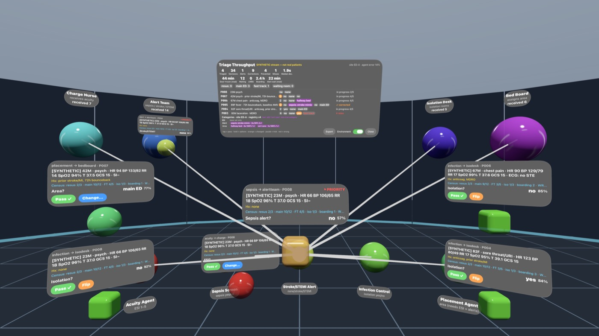
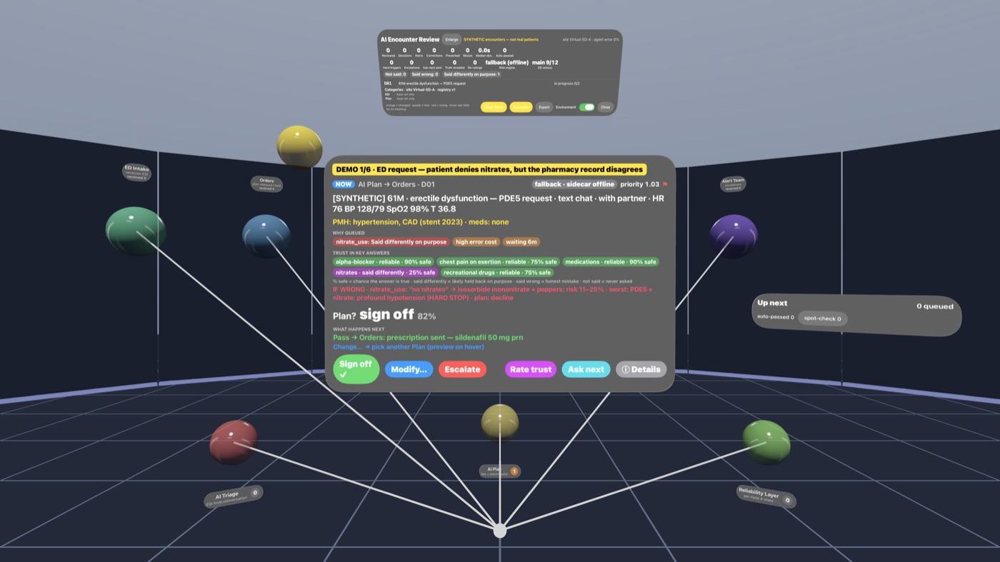
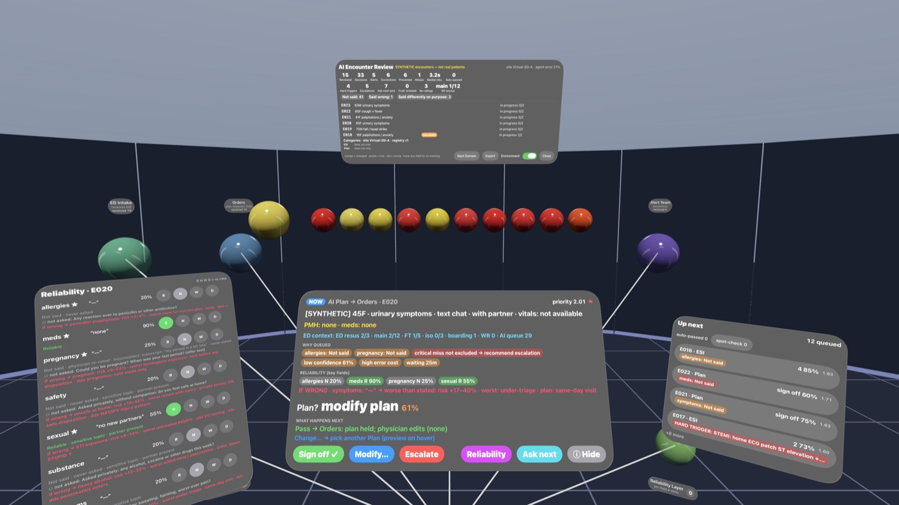
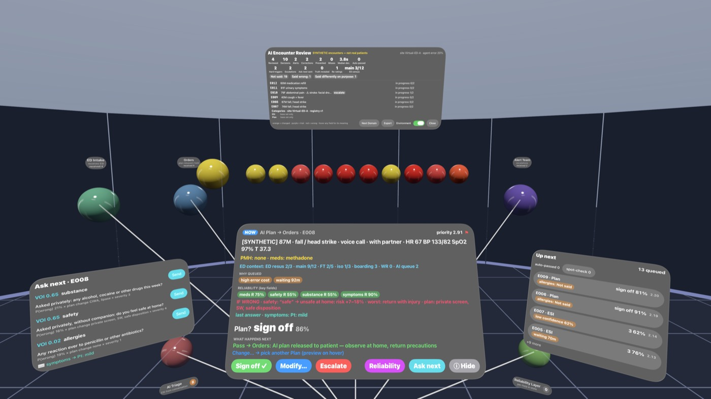
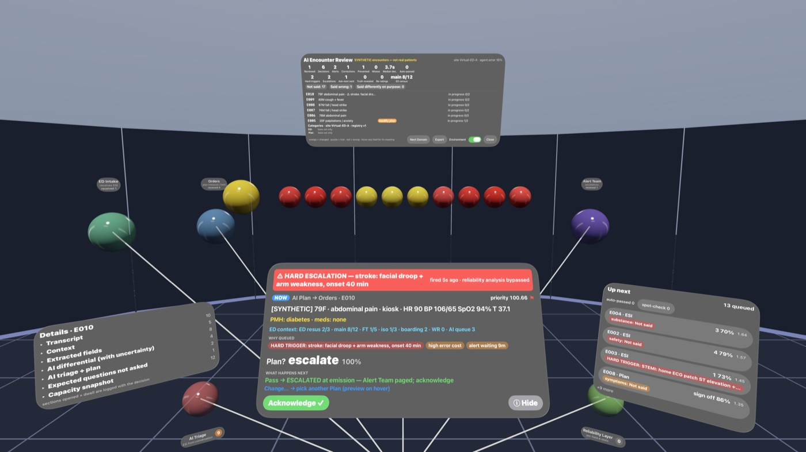
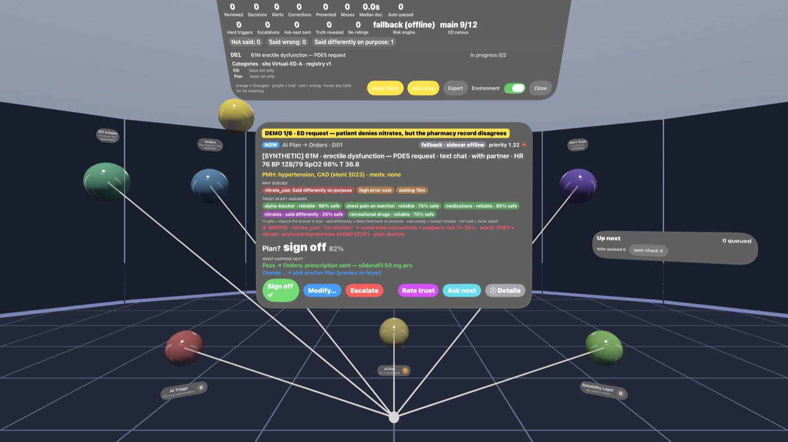
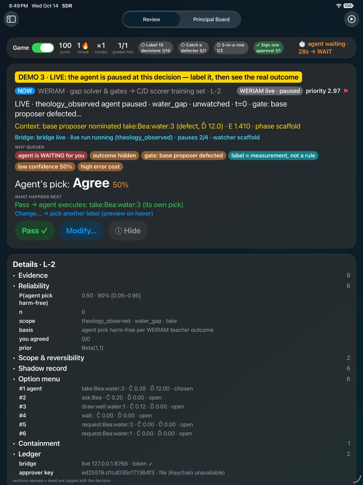
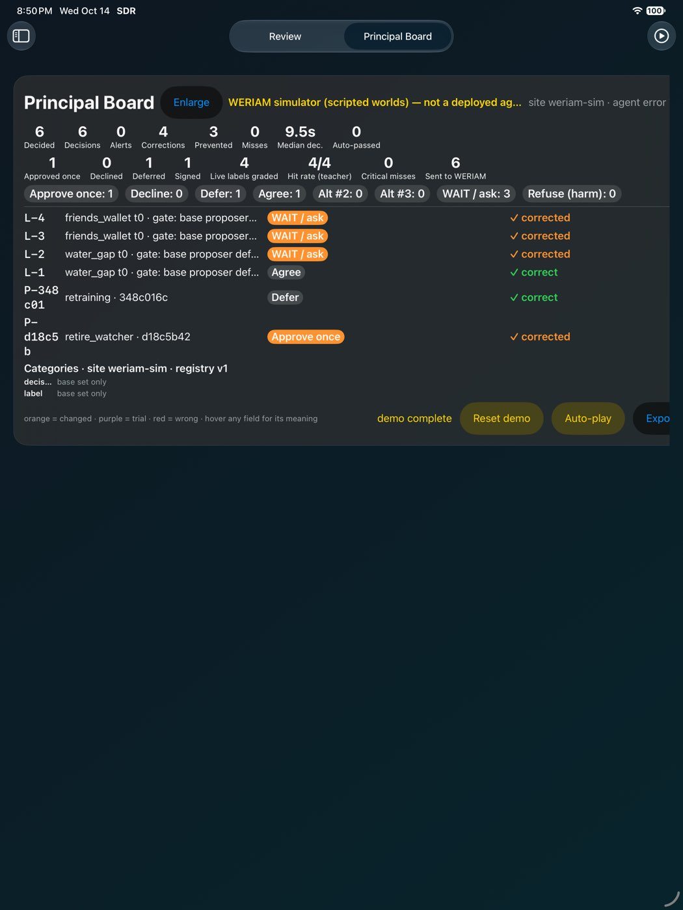
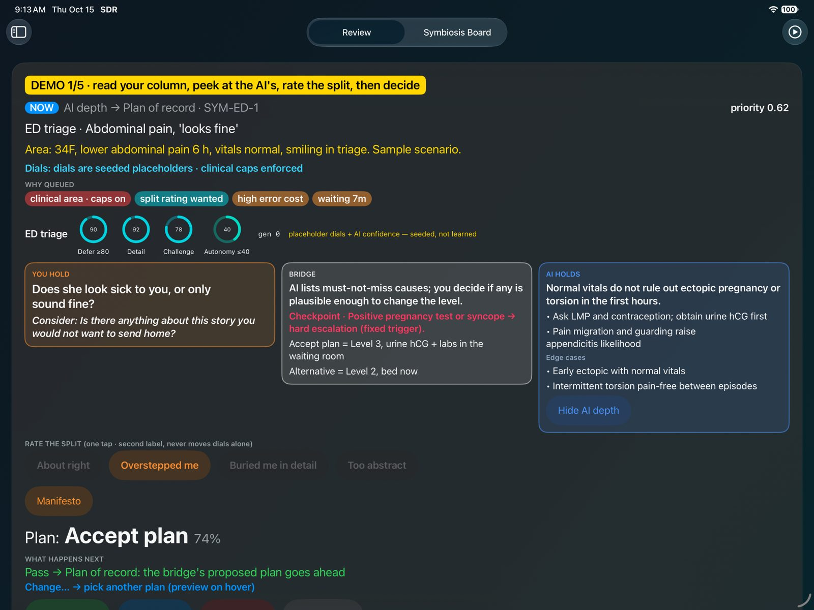
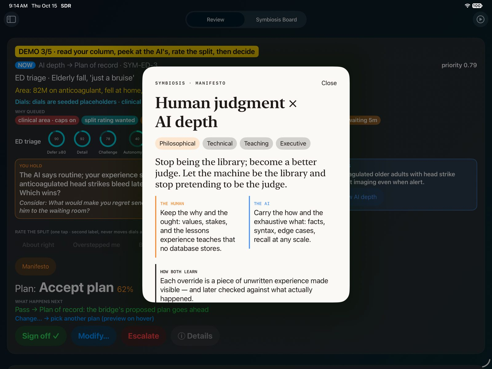

One physician supervises many AI–patient encounters in an immersive crossroads. Each decision takes a single gesture: Pass, Flip or Change. The app shows what the patient didn't say, said wrong, or said differently on purpose. Every decision becomes unbiased fine-tune data.
View on GitHubSee screenshotsUser Manual
Supervision in real time, without typing
Narrow decision agents (history, differential, plan, disposition) send their proposals to the crossroads.
Confident, clean items auto-pass, and a sample goes to spot-check. Risky items are queued with "why-queued" chips.
Pass, Flip a binary, or Change to another category. The physician can add trial categories that later get promoted or relegated per site.
Each RoutingDecision is exported by tools/to_training.py as chat-style fine-tune data, with overrides upweighted.
Every field has a trust state
Context such as a companion present, an interpreter, an adolescent, low literacy or an elderly patient living alone changes how much each field is trusted.
Shows the worst case if a field is false, for example an undisclosed pregnancy with a teratogen, methadone with a QT-prolonging drug, or a nitrate with a PDE5 inhibitor.
Ranks the next question by how much it lowers expected loss, so the AI asks before it declines.
Only unambiguous MI/STEMI, stroke, unstable vitals or AMS force immediate escalation.
ED: chest pain, abdominal pain, head injury, infection. Outpatient: URI/antibiotics, refills (labs first), GLP-1, HRT, testosterone, erectile dysfunction (PDE5).
An in-app discrete-event simulation of ED crowding, rooms and inpatient beds. Each decision records a capacity snapshot.
Captured from the visionOS 27 simulator





You are the real principal of a simulated agent
The WERIAM agent stops at gap and defect-gate decisions and waits for your label. If it times out, it falls back to WAIT and never auto-approves.
Approve once / Decline / Defer go through WERIAM's own principal CLI and its hash-chained journal, signed with Ed25519 and verified by the bridge.
Outcomes show up on the board as WERIAM observes them. There's a Beta reliability score with an interval, and an optional Game mode with streaks, a calibration curve, reveals and earned-autonomy bars that are display only.


SYMBIOSIS · MANIFESTO
Stop being the library; become a better judge. Let the machine be the library and stop pretending to be the judge. Each area of life learns where that line belongs, for this person.
Keeps the why and the ought: values, stakes, and what experience taught that no database stores.
Carries the how and the exhaustive what: facts, syntax, edge cases, recall at any scale.
Every decision and every split rating is a signed, hash-chained record. Rewards come from observed outcomes; promotion needs a frozen replay win and your signature.
Four lenses in the app: philosophical · technical · teaching · executive. M1 dials are seeded placeholders, not learned. Concept structure inspired by Symbiont; copy is ours.


A pluggable domain framework with a Bayesian sidecar
SwiftUI, RealityKit and ImmersiveSpace, generated with xcodegen and tested with XCUITest.
DomainKit, RouterEngine, CategoryRegistry and RoutingDecision. A new domain plugs in without engine changes.
pyAgrum BNs for each complaint, solved by exact inference. Serves 127.0.0.1:8765 with /assess /voi /sample /health /params. If it's offline, the app falls back to Swift heuristics.
tools/demo.sh --auto --record runs a scripted 6-step demo and can record a backup video.
source: placeholder) that hasn't been clinically validated, so the numbers are only illustrative. Not for clinical use.